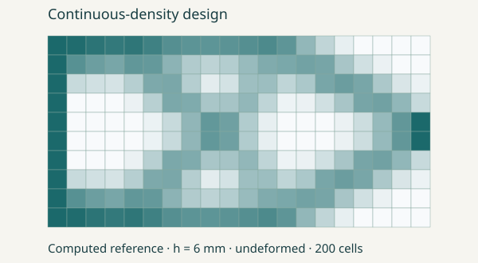
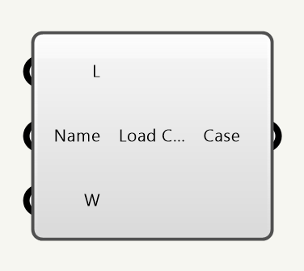

STEP BY STEP / 30 MINUTES
Optimise the structure.
Where should a limited amount of material remain?
Run a density optimisation with a fixed material budget and explain the objective, filter and termination reason.

Files and starting point
Before starting: teaching archives contain the definition, not completed runtime jobs. Select the shared Rhino geometry where needed and run the required stages in order. Keep job folders in place for reports and case selection.
Build and observe
- Continue the completed lesson 04 model or open the starter and select the shared Rhino geometry. Rerun BASELINE if this file has no current result; runtime results are not embedded in the teaching archive.
- Keep geometry, h = 6 mm, supports, load, units and thickness unchanged. Use CPU direct for this small classroom model.
- Inspect Settings: Volume = 0.40, Iterations = 80 (maximum), Radius = 1.8 cells (10.8 mm at h = 6), Threshold = 0.40, Keep attachments = true. No manufacturing symmetry or extrusion is imposed.
- Trace the new Engineering component labelled OPTIMISATION. It receives the same D, S, Cases and M as BASELINE, but Mode = 1. Connect Settings O → OPTIMISATION O; this wire is missing in the starter.
- Feed OPTIMISATION Result R to TopOpt Results. Use Field = 0 for density, Threshold T = 0.40 and Deformation scale S = 0. Hide baseline preview while viewing the design.
- Pulse RUN OPTIMISATION once. Observe progress and wait for a completed result. Read the termination reason in Status/Info: completed alone does not establish convergence or feasibility.
- Read the continuous-density material fraction and compliance. With this exact reference setup, optimisation converges; reference mass is 0.045216 kg and maximum displacement about 0.046659 mm.
- Compare mass and deformation with the full-material baseline. Optimisation improves the starting 40%-density distribution; its “improvement” percentage is not a stiffness gain over the full-solid plate.
- For one controlled optional variation, try Volume = 0.50 and rerun the design. Record the changed input and response, then restore 0.40 and rerun before lesson 06.
- Save the definition and retain the completed optimisation job folder. The threshold mesh is a candidate shape; do not treat its density response as a verified binary part.
Follow the data
| From | To / meaning |
|---|---|
| Same D, S, Cases, M, O | Engineering Mode 1 |
| RUN OPTIMISATION button | Mode 1 Run |
| Mode 1 Result R | Results R |
| Threshold slider 0.40 | Settings Threshold + Results T |
| Results Info | Record material, compliance and iteration status |
Explore the material budget
Budget arithmetic for this full 0.113040 kg plate. This does not predict topology, convergence, displacement or binary mass. Rerun the solver to calculate those.
Understand the result
Compliance is load times displacement summed over the loaded degrees of freedom; lower compliance means a stiffer response for the same loading. The objective here is stiffness under a material budget, not an automatic proof of strength or constructability.
The reference density design retains 40% of full mass. Material near load/support interfaces is preserved by Engineering even though the Domain message reports 0 explicitly kept cells. This distinction matters when comparing interfaces and volume budgets.
The minimal TopOpt Solver can also optimise a single simultaneous load set. This course uses Engineering so the same result can be used in Mode 2 and compared against its baseline. Do not mix an unrelated simple-Solver result into the Engineering Source input.
Computed reference — introductory plate
120 × 60 × 2 mm; h = 6 mm; steel; 100 N downward; left edge fixed. This table records a Python-worker run of the declared model, not a classroom Rhino UI test.
| Stage | Mass (kg) | Maximum U (mm) | Maximum von Mises (MPa) |
|---|---|---|---|
| Full-material baseline | 0.1130400 | 0.0092775 | 10.557988 |
| Continuous-density design | 0.0452160 | 0.0466591 | relaxed design surrogate |
| Binary verification T = 0.40 | 0.0542592 | 0.0186599 | 20.314921 |
Inputs and numerical reference. Relaxed optimisation stress is deliberately not presented as a comparable full-material stress value.
Components in this lesson



These are native Grasshopper capsule renderings of the actual components, not screenshots of a running solve.
Checkpoint
- Volume budget is 0.40 of the active domain, including preserved material.
- You can distinguish density, thresholded shape and deformation preview.
- You recorded termination reason and actual material fraction.
- Baseline and optimisation use the same physical model.